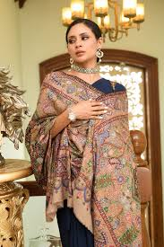

An eminent geographical indication, Pashmina shawls find their home in the state of Jammu and Kashmir.
The origin of Pashmina shawls can be traced back to the Kashmir region, which is located in the northern part of the Indian subcontinent. The name "Pashmina" comes from the Persian word "Pashm," which means "soft gold" or "fine wool." Pashmina shawls are highly valued for their exceptional softness, warmth, and luxurious feel.
The production of Pashmina shawls is closely tied to the Changthangi or Pashmina goat, which is native to the high-altitude regions of the Himalayas, including parts of Jammu and Kashmir, Tibet, and Nepal. These goats have a unique undercoat of fine, downy wool that helps them survive the harsh cold climates. It is this fine wool that is used to create Pashmina fibers.
